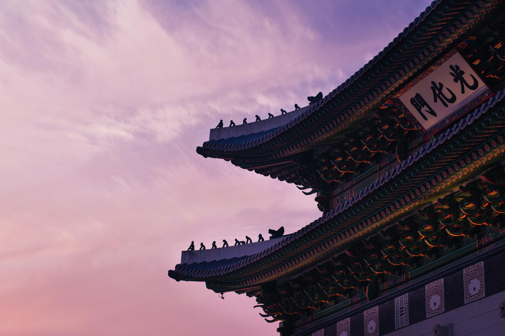

대한민국의 수도이자 광역자치단체이다. 줄여서 서울이라고도 한다. 현재 대한민국에서 유일하게 특별시 이름을 달았으며, 수장인 서울특별시장은 대한민국의 광역자치단체장 중 유일하게 장관급 대우를 받는다. [5] 서울특별시는 아예 지방자치법의 특별법[6]으로 규정되어 있는 법률상 대한민국 제1의 도시다. 북한까지 포함해 봐도, 북한의 최대 도시 평양의 인구가 300만 명밖에 되지 않아 서울은 명실상부한 한반도의 종주도시라고 할 수 있다. 
고려시대 때는 개경 이남의 '남경'이었으며 조선시대 때는 500년 동안 조선의 수도 '한양'이었고, 다시 대한민국의 수도인 서울로서 압도적인 지위를 차지하는 도시이다. 특히 1990년대 이후로 지방 도시들이 쇠락하고 서울의 지위가 상대적으로 더욱 높아졌는데 실로 한국의 정치, 교육, 문화, 경제를 완전히 주도하는 형국이다. 오죽하면 중앙정부에서 혁신도시까지 만들어 각종 공공기관을 지방으로 내려보내며 인구 분산을 꾀하는 중이다.
그럼에도 여전히 현재 인구는 1,000만 명이 약간 안 되는 수준으로, 광역권인 수도권 주변 도시들까지 포함하면 세계적으로도 손꼽힐 만한 메갈로폴리스가 된다. 서울의 인구수는 몇 년 전부터 많은 인구 유출로 2016년 5월을 기점으로 1000만 명 선이 깨져 세계 도시 인구 순위에서는 많이 밀려났지만[7] 그 대부분의 인구가 인천, 경기도에 유입되었기 때문에 수도권의 인구는 아직까지 증가세다. 전국 인구 중 50% 이상이 집중되어 있기에 세계적으로도 수도권에 인구가 가장 많이 밀집되어 있는 편이다. 서울을 포함한 한국 수도권의 도시권 인구는 2,500만여 명으로 세계 10위권에 해당해 대략 도쿄, 자카르타, 델리, 카라치, 상파울루, 충칭, 상하이 등의 도시권보다는 적고, 뭄바이, 뉴욕, 멕시코시티, 마닐라, 라고스, 다카, 카이로의 도시권과 맞먹는 인구를 가지고 있다.
고대부터 한반도의 중심에 자리하고 한강을 낀 데다 드넓고 비옥한 평야지대가 펼쳐져 있어서 전략적으로 중요한 도시였다. 삼국시대에는 원래 백제의 수도였으나 치열한 국경 전쟁을 거쳐 고구려,이후 신라의 땅이 되었다. 세 국가 모두 서울 지역을 가졌을 때 전성기를 맞았을 정도. 고려 시대에도 남경(서울) 천도가 적극적으로 추진되었지만 국운이 기울면서 유야무야되었다. 고려에 이어 조선이 개국한 후 이성계가 한양으로 천도하면서 서울은 다시 한반도 국가의 수도가 되었고, 조선 왕조는 물론 대한제국까지 500년 동안 한양을 수도로 삼았다.
일제 때 잠시 경성부(京城)로 개칭되었으며, 대한민국 임시정부는 중국에 망명정부를 꾸렸지만, 명목상 수도는 서울로 두었다. 1946년에 경성부라는 명칭은 공식적으로 '서울'로 개칭되고 1948년 정부수립 이후에 그대로 대한민국의 수도가 되었다.
북한도 1948년 최초의 헌법을 제정하면서 “조선민주주의인민공화국의 수부(首府)는 서울시이다”라고 규정하였으며, 1972년 헌법을 개정해 수도를 평양으로 바꿀 때까지 명목상의 수도를 서울이라 하였다. 다만 “조선 시대에는 서울을 한양 또는 한성이라고만 불렀고, 일제강점기에는 경성이라 부르다가 해방 후 서울로 불렀다”는 견해는 타당하지 않다. 한성부 또는 경성부라는 명칭은 공부상의 공식 지역 명칭이었을 뿐, 일반 대중들 사이에서는 그저 수도이기때문에 일반명사로서 서울이라 불렸다는 증거는 상당히 많으며, 서울이 일반명사에서 점차 고유명사가 되기 시작한 역사는 생각보다 꽤나 길다. 따라서 조선시대 또는 일제강점기를 다룬 사극의 등장인물들은 서울을 한양이나 경성이라고 부르는 것보다는 차라리 서울이라고 부르는 것이 고증에 맞는 자연스러운 설정일 수 있다.